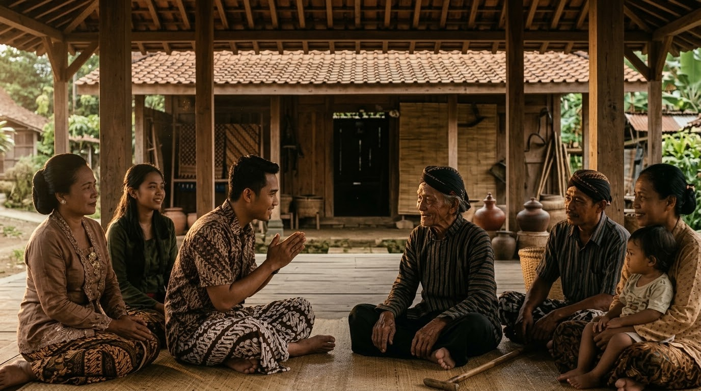

NAWA SAMADHI SEBAGAI LAKU SEJATI

Dari Keadaan Kesadaran Menuju Perubahan Kehidupan.
Pembahasan mengenai kesadaran sering berhenti pada pengalaman batin. Manusia dapat berbicara tentang ketenangan, kejernihan, kebijaksanaan, dan kedalaman diri, tetapi semua itu belum cukup apabila tidak memberikan perubahan pada cara menjalani kehidupan.
Dalam perspektif Kawruh Uttamopadesa, Nawa Samadhi memiliki hubungan erat dengan persoalan tersebut. Samadhi tidak dimaksudkan sebagai pengalaman yang hanya terjadi pada saat seseorang berada dalam keheningan. Samadhi perlu membawa pengaruh terhadap seluruh kehidupan. Karena itu, Nawa Samadhi dapat dipahami sebagai salah satu kerangka untuk melihat bagaimana kesadaran berkembang menjadi laku.
Kesadaran melihat. Kawruh memahami. Pangrasa menghayati. Karsa menentukan. Laku mewujudkan.
Laku Menjadi Ukuran Kesadaran.
Seseorang dapat mengetahui banyak hal mengenai kehidupan tetapi belum tentu menjalani kehidupan dengan baik. Pengetahuan dan laku merupakan dua hal yang berbeda. Pengetahuan berada pada wilayah pemahaman. Laku berada pada wilayah perwujudan.
Nawa Samadhi mempertemukan keduanya. Ketika manusia memahami pentingnya kejernihan, ia perlu berusaha menjaga cipta. Ketika memahami ketulusan, ia perlu menggunakannya dalam hubungan dengan sesama. Ketika memahami keutamaan, ia perlu mengarahkan kehendaknya kepada tindakan yang baik. Dengan demikian, samadhi menjadi semakin nyata ketika menghasilkan perubahan perilaku.
Panarik dan Pengendalian Keterikatan.
Dalam Samadhi Panarik, manusia belajar mengurangi keterikatan yang dapat menguasai kehidupannya. Dalam laku sehari-hari, hal tersebut dapat terlihat dari cara seseorang memperlakukan harta. Harta tetap digunakan, tetapi tidak menjadi ukuran harga diri. Kedudukan tetap dijalankan, tetapi tidak menjadi alasan untuk merendahkan orang lain. Penghormatan dapat diterima, tetapi tidak menjadi kebutuhan yang harus terus dikejar.
Panarik tidak mengajarkan penolakan terhadap kehidupan. Panarik mengajarkan agar manusia tidak kehilangan dirinya karena kehidupan.
Pamawas dan Kejujuran terhadap Diri.
Laku sejati membutuhkan kejujuran terhadap diri sendiri. Hal tersebut berkaitan dengan Samadhi Pamawas. Manusia perlu berani melihat bahwa dirinya masih memiliki kekurangan. Ia mungkin masih mudah marah. Masih memiliki pamrih. Masih ingin dipuji. Masih sulit menerima kritik. Masih ingin dianggap benar.
Melihat keadaan tersebut bukan berarti merendahkan diri. Justru kemampuan melihat kekurangan merupakan dasar perbaikan. Tanpa pamawas, manusia dapat mengira dirinya telah berubah padahal hanya berubah dalam cara berbicara tentang dirinya.
Wening dalam Menghadapi Persoalan.
Samadhi Wening kemudian diuji ketika manusia menghadapi persoalan nyata. Kejernihan mudah dibicarakan ketika keadaan tenang. Namun ketika menghadapi konflik, tekanan, kerugian, atau perlakuan yang tidak menyenangkan, kejernihan mulai diuji.
Wening berarti manusia berusaha tidak membiarkan keadaan tersebut langsung menentukan tindakan. Ia memberikan waktu untuk memahami persoalan. Ia mempertimbangkan akibat. Ia tidak tergesa-gesa berbicara. Ia tidak menjadikan kemarahan sebagai dasar keputusan. Dengan demikian, wening menjadi keterampilan hidup yang nyata.
Tentrem dalam Hubungan dengan Sesama.
Samadhi Tentrem kemudian tampak dalam hubungan sosial. Manusia yang semakin tenteram tidak berarti selalu menyetujui orang lain. Perbedaan tetap dapat terjadi. Namun perbedaan tidak harus berubah menjadi permusuhan.
Seseorang dapat menolak pendapat tanpa merendahkan orangnya. Dapat memberikan kritik tanpa menghina. Dapat mempertahankan prinsip tanpa membenci pihak yang berbeda. Inilah salah satu bentuk laku yang menunjukkan bahwa ketenteraman telah menjadi bagian dari kehidupan.
Kawruh yang Menjadi Pedoman.
Dalam Samadhi Kawruh, manusia belajar menggunakan pengetahuan sebagai penuntun. Pengetahuan membantu manusia memahami akibat dari tindakannya. Sebelum melakukan sesuatu, ia mempertimbangkan apakah tindakan tersebut membawa kebaikan atau justru menimbulkan kerugian.
Kawruh juga mendorong manusia untuk tidak mudah percaya pada penilaian yang belum diperiksa. Dengan demikian, laku tidak dijalankan secara membuta. Kesadaran dan pengetahuan berjalan bersama.
Pangrasa dan Kemampuan Menghayati Kehidupan.
Samadhi Pangrasa membuat pengetahuan menjadi lebih hidup. Manusia tidak hanya mengetahui bahwa orang lain dapat menderita. Ia mampu menghayati kenyataan bahwa tindakannya dapat memberikan dampak kepada orang lain.
Karena itu, pangrasa mendorong empati dan kepedulian. Namun pangrasa tetap perlu berada dalam keseimbangan dengan cipta. Kasih tidak berarti membenarkan semua tindakan. Kepedulian tidak berarti kehilangan kebijaksanaan. Ketulusan perlu berjalan bersama kejernihan.
Pepadhang dalam Pengambilan Keputusan.
Pada Samadhi Pepadhang, kejernihan semakin dibawa ke dalam keputusan kehidupan. Manusia menghadapi banyak pilihan setiap hari. Tidak semuanya mudah. Ada pilihan yang menguntungkan diri sendiri tetapi merugikan orang lain. Ada pilihan yang tidak memberikan keuntungan langsung tetapi lebih sesuai dengan keutamaan.
Pepadhang membantu manusia melihat lebih jauh daripada keuntungan sesaat. Keputusan tidak hanya dinilai berdasarkan apa yang diperoleh sekarang, tetapi juga berdasarkan dampaknya terhadap kehidupan.
Suci dan Kebersihan Motif.
Laku juga perlu diperiksa dari motif yang melatarbelakanginya. Samadhi Suci mengajarkan pentingnya mengenali pamrih. Seseorang dapat melakukan kebaikan tetapi diam-diam mengharapkan pujian.
Dapat membantu orang lain tetapi berharap mendapatkan penghormatan. Dapat berbicara mengenai kebijaksanaan tetapi sebenarnya ingin menunjukkan keunggulan. Kesadaran terhadap motif semacam itu membantu manusia membersihkan arah tindakannya.
Suci tidak berarti menganggap diri sudah bersih. Suci justru menuntut keberanian untuk terus memeriksa diri.
Sampurna dan Konsistensi Laku.
Samadhi Sampurna menunjukkan keadaan ketika prinsip kehidupan mulai menjadi watak. Kebaikan tidak lagi hanya dilakukan ketika sedang ingin. Kejujuran tidak hanya dilakukan ketika menguntungkan. Kesabaran tidak hanya dilakukan ketika keadaan mudah. Ketulusan tidak hanya dilakukan ketika mendapatkan penghargaan.
Nilai-nilai tersebut perlahan menjadi bagian dari cara hidup. Inilah perbedaan antara mengetahui laku dan menjalani laku. Ketika laku telah menjadi bagian dari watak, manusia tidak lagi terus-menerus memerlukan dorongan dari luar untuk melakukan kebaikan.
Laku Sejati Tidak Membutuhkan Pengakuan.
Salah satu ujian penting dalam perjalanan kesadaran adalah keinginan untuk diakui. Manusia dapat merasa bahwa perjalanan batinnya lebih dalam daripada orang lain. Ia dapat merasa lebih sadar, lebih bijaksana, atau lebih memahami kehidupan. Namun keadaan tersebut justru dapat menjadi bentuk keterikatan baru. Karena itu, laku sejati tidak bergantung pada pengakuan.
Manusia berbuat baik karena memahami bahwa kebaikan perlu diwujudkan, bukan semata-mata agar dirinya disebut baik. Semakin matang kesadaran, semakin kecil kebutuhan untuk memamerkan kedalaman dirinya.
Samadhi di Tengah Kehidupan.
Dari sudut pandang ini, samadhi tidak membutuhkan tempat khusus. Tempat khusus dapat digunakan untuk menenangkan diri, tetapi kehidupan sehari-hari merupakan ruang utama untuk membuktikan hasilnya.
Di dalam keluarga, samadhi diuji melalui kesabaran. Di tempat kerja, diuji melalui kejujuran dan tanggung jawab. Dalam masyarakat, diuji melalui sikap terhadap perbedaan.
Ketika memperoleh keberhasilan, diuji melalui kerendahan hati. Ketika mengalami kegagalan, diuji melalui keteguhan. Dengan demikian, seluruh kehidupan dapat menjadi ruang laku.
Kesimpulan.
Nawa Samadhi Uttamopadesa dapat dipahami sebagai perjalanan yang membawa manusia dari kesadaran menuju laku. Panarik membantu mengurangi keterikatan. Pamawas mengajarkan kejujuran terhadap diri. Wening menjernihkan cipta. Tentrem menata rasa dan hubungan dengan sesama.
Kawruh memberikan pemahaman. Pangrasa menjadikan pemahaman sebagai penghayatan. Pepadhang menerangi keputusan. Suci membersihkan pamrih. Sampurna menjadikan keselarasan sebagai cara hidup. Dengan demikian, samadhi tidak berhenti pada pengalaman batin.
Samadhi menjadi nyata ketika kesadaran mengubah cara manusia menjalani kehidupan. Cipta yang wening, rasa yang tulus, dan karsa yang utama akhirnya harus hadir dalam tindakan. Di situlah Nawa Samadhi bertemu dengan laku sejati.
FAQ - Nawa Samadhi Sebagai Laku Sejati.
1. Mengapa Nawa Samadhi berkaitan dengan laku sejati?
Karena samadhi tidak berhenti pada keadaan batin, tetapi perlu diwujudkan dalam ucapan, sikap, keputusan, dan tindakan.
2. Apa contoh samadhi dalam kehidupan sehari-hari?
Menahan diri sebelum bereaksi, mempertimbangkan akibat sebelum mengambil keputusan, bersikap jujur, menghargai sesama, dan tidak dikuasai pamrih merupakan contoh penerapannya.
3. Apakah laku sejati berarti tidak pernah melakukan kesalahan?
Tidak. Laku sejati merupakan proses terus-menerus untuk mengenali kekurangan, memperbaiki diri, dan menjaga arah kehidupan.
4. Mengapa pamrih perlu diperhatikan?
Karena tindakan yang tampak baik dapat kehilangan ketulusannya apabila terutama dilakukan demi pujian, penghormatan, atau kepentingan pribadi.
5. Apakah samadhi hanya dapat dilakukan dalam keheningan?
Tidak. Keheningan dapat membantu menata diri, tetapi hasil samadhi justru perlu terlihat dalam kehidupan nyata.
6. Apa hubungan samadhi dengan Weninging Cipta, Tulusing Rasa, dan Utamaning Karsa?
Ketiganya merupakan bentuk nyata dari keselarasan yang diupayakan dalam perjalanan Nawa Samadhi.